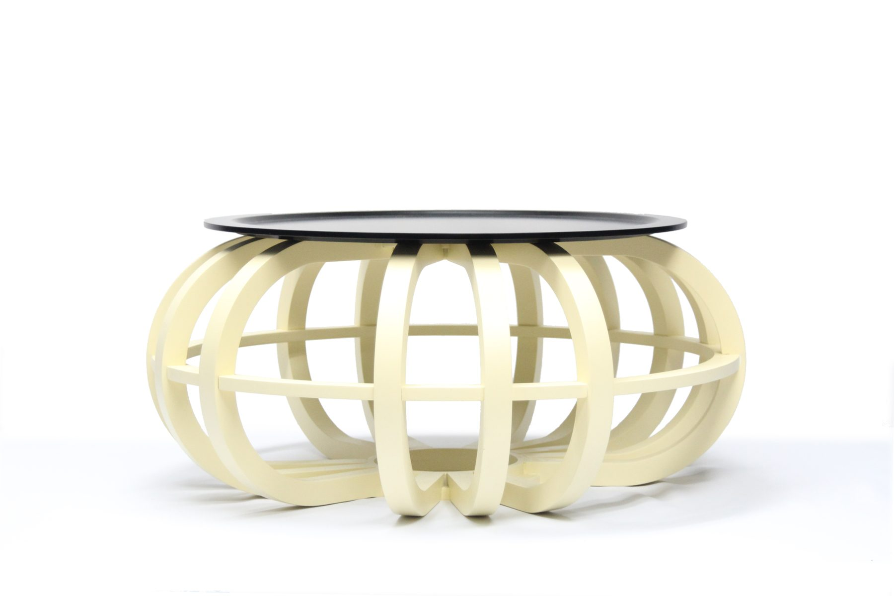
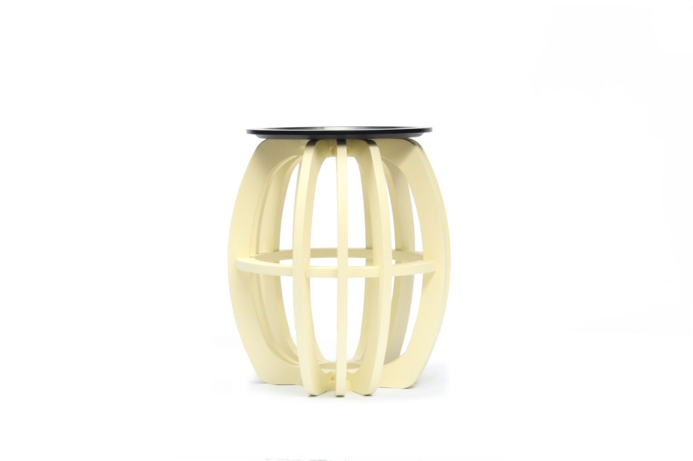
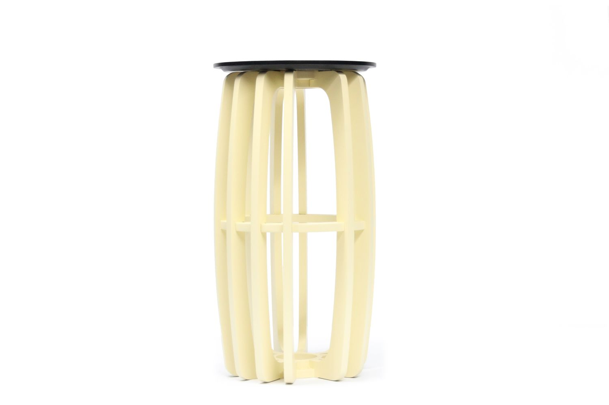
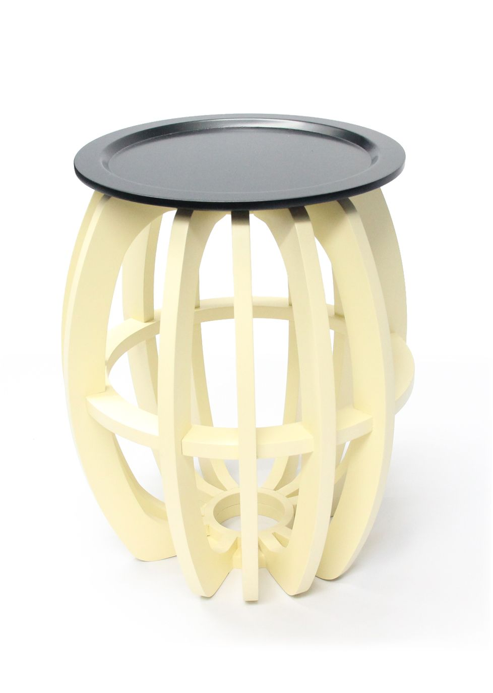
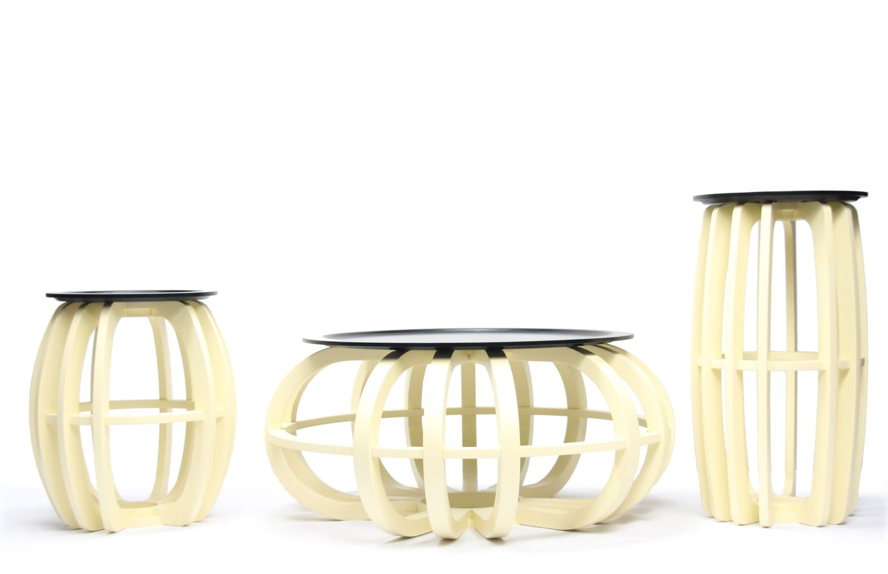

WORK 22 / 29
Lantern Table
A cultural form reinterpreted in contemporary furniture.
Year2012
MaterialsTimber
StagePrototype

DESIGN STORY
Lantern Table translates the familiar structure of a Chinese lantern into contemporary furniture. Repeated curved elements create an open, rhythmic base, while the tabletop gives the composition a clear everyday purpose. The design draws on cultural memory without reproducing a traditional object literally.
SELECTED PRESENTATIONS
- 2012International Contemporary Furniture Fair · New York



